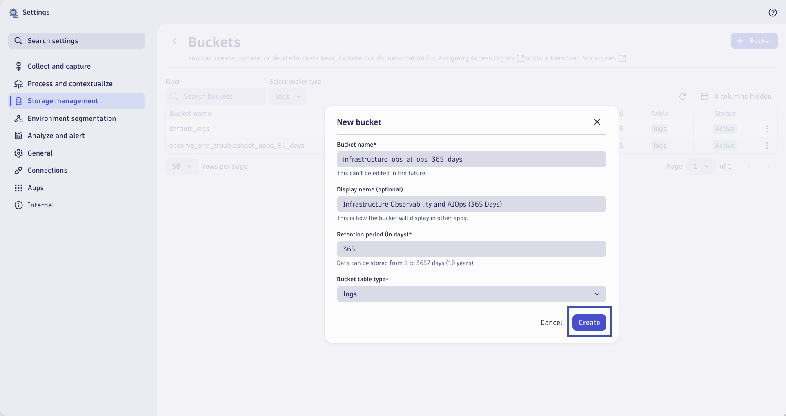

Dynatrace Buckets (Storage Management)#
In this module we'll create Grail storage Buckets to manage log data. By default, all logs are stored in a default logs bucket in Grail - that retains log data for 35 days. We can create custom buckets with different retention periods to solve for our log management and analytics use cases.
You can create a bucket tailored to your needs. Grail buckets behave like folders in a file system and are designed for records that should be handled together. For example, you might need to store together:
- Data with the same retention period
- Data that needs to be queried/analyzed together
- Data that needs to be deleted at the same time
Defining buckets can improve query performance by reducing query execution time and the scope of data read. Finally, having your data stored in a bucket streamlines your permission management because you can easily provide a user group or single users with access to needed data.
Goals:
- View existing buckets within Grail storage management
- Create new custom buckets for log data
View Buckets#
In your Dynatrace tenant, use the Search function (cmd + k / ctrl + k) and search for bucket. Click to open Bucket storage management under the Settings category.
This will open the Settings app and the Buckets list under the Storage management menu. Here you can view all existing buckets, including the default buckets and custom buckets. Each bucket has a retention period (in days) and belongs to a specific table, where the table is a specific data type.

Change the Select bucket type dropdown to filter on logs buckets only. Locate the default_logs bucket and notice the retention period of 35 days. By default, all logs are stored in this bucket and will be retained for 35 days.

Create Buckets#
95 Day Retention#
Click on the + Bucket button to add a new bucket. This bucket will store the application logs we want to retain for a longer duration, 95 days.
Configure the new bucket as follows:
Bucket name:
observe_and_troubleshoot_apps_95_days
Display name:
Observe and Troubleshoot Apps (95 Days)
Retention period (in days):
95
Bucket table type:
logs
Click on Create to add the new bucket.
It will take a minute or two for the new bucket to be generated. Refresh the page until the bucket Status is Active.

Creating a new bucket has no effect on data storage in Grail. Logs will continue to be stored in the existing buckets, including the default bucket. We will use Dynatrace OpenPipeline in upcoming lab modules to assign log data to the new bucket.
365 Day Retention#
Click on the + Bucket button to add a new bucket. This bucket will store the infrastructure logs that we are required to keep (theoretically) for an entire year.
Configure the new bucket as follows:
Bucket name:
infrastructure_obs_ai_ops_365_days
Display name:
Infrastructure Observability and AIOps (365 Days)
Retention period (in days):
365
Bucket table type:
logs
Click on Create to add the new bucket.

It will take a minute or two for the new bucket to be generated. Refresh the page until the bucket Status is Active.
Creating a new bucket has no effect on data storage in Grail. Logs will continue to be stored in the existing buckets, including the default bucket. We will use Dynatrace OpenPipeline in upcoming lab modules to assign log data to the new bucket.
7 Day Retention#
Click on the + Bucket button to add a new bucket. This bucket will store the various logs that we don't need to keep very long and can purge after a week.
Configure the new bucket as follows:
Bucket name:
log_management_analytics_7_days
Display name:
Log Management and Analytics (7 Days)
Retention period (in days):
7
Bucket table type:
logs
Click on Create to add the new bucket.
It will take a minute or two for the new bucket to be generated. Refresh the page until the bucket Status is Active.

Creating a new bucket has no effect on data storage in Grail. Logs will continue to be stored in the existing buckets, including the default bucket. We will use Dynatrace OpenPipeline in upcoming lab modules to assign log data to the new bucket.
Wrap Up#
What You Learned Today
By completing this module, you've successfully created custom buckets for Grail storage management.
- Custom Logs Buckets
- Logs for the
Observe and Troubleshoot Appsuse case, retained for 95 Days - Logs for the
Infrastructure Observability and AIOpsuse case, retained for 365 Days - Logs for the
Log Management and Analyticsuse case, retained for 7 Days
- Logs for the
These retention periods were chosen arbitrarily for this lab, your retention periods in the real-world will vary.